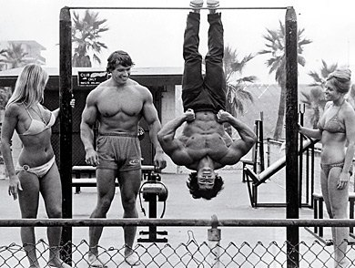
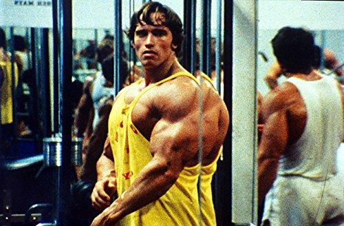
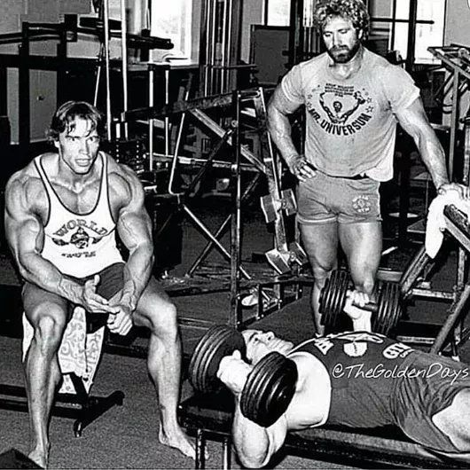
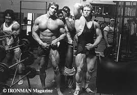
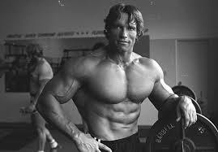
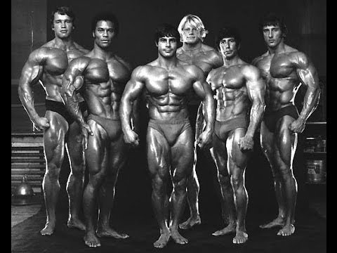
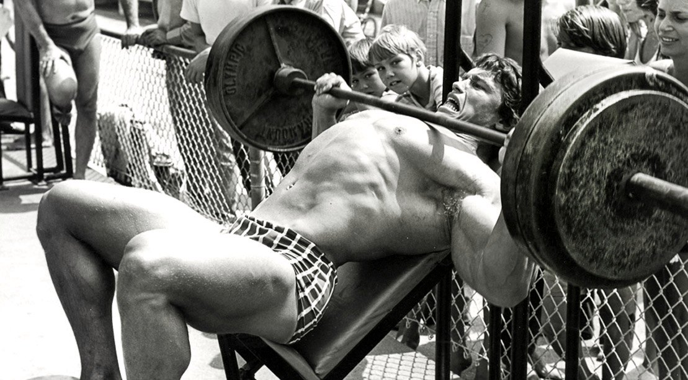

Sobre Pumping Iron
Pumping Iron es una película realizada en 1975 sobre el transcurso de los competidores hacia el Mr. Olympia del año 1975.
Es protagonizada por Arnold Schwarzenegger y su mejor amigo, Franco Columbu.
Esta es la primera vez que se ha dado a conocer a Arnold al mundo del cine, en donde después tomaría legendarios papeles como el de Terminator.






